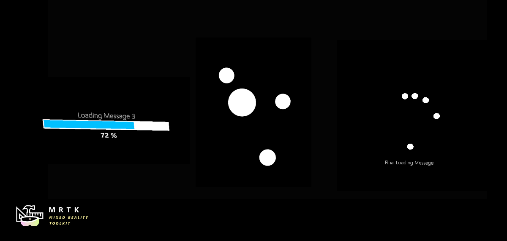

Progress Indicators (プログレス インジケーター)

サンプル シーン
プログレス インジケーターの使い方の例は、ProgressIndicatorExamples シーンにあります。 このシーンでは、SDK に含まれる各プログレス インジケーターのプレハブをデモンストレーションします。

サンプル: プログレス インジケーターを開く、更新する、閉じる
プログレス インジケーターは IProgressIndicator インターフェイスを実装しています。このインターフェイスは GetComponent を使って GameObject から取得できます。
[SerializedField]
private GameObject indicatorObject;
private IProgressIndicator indicator;
private void Start()
{
indicator = indicatorObject.GetComponent<IProgressIndicator>();
}
IProgressIndicator.OpenAsync() と IProgressIndicator.CloseAsync() メソッドは Task を返します。これらのタスクを async メソッド内で await することを推奨します。
インジケーターの Progress プロパティを 0-1 の値に設定して、表示されている進捗状況を更新します。表示されたメッセージを更新するには、Message プロパティを設定します。それぞれの実装では、この内容は異なる方法で表示されるかもしれません。
private async void OpenProgressIndicator()
{
await indicator.OpenAsync();
float progress = 0;
while (progress < 1)
{
progress += Time.deltaTime;
indicator.Message = "Loading...";
indicator.Progress = progress;
await Task.Yield();
}
await indicator.CloseAsync();
}
インジケーターの状態
インジケーターの State (状態) プロパティは、どの操作が有効かを決定します。無効なメソッドを呼び出すと、通常、インジケーターはエラーを報告して何も実行しません。
| State (状態) | 有効な操作 |
|---|---|
ProgressIndicatorState.Opening |
AwaitTransitionAsync() |
ProgressIndicatorState.Open |
CloseAsync() |
ProgressIndicatorState.Closing |
AwaitTransitionAsync() |
ProgressIndicatorState.Closed |
OpenAsync() |
AwaitTransitionAsync() は、インジケーターを使用する前にインジケーターが完全に開いている、もしくは閉じていることを確認するために用いることができます。
private async void ToggleIndicator(IProgressIndicator indicator)
{
await indicator.AwaitTransitionAsync();
switch (indicator.State)
{
case ProgressIndicatorState.Closed:
await indicator.OpenAsync();
break;
case ProgressIndicatorState.Open:
await indicator.CloseAsync();
break;
}
}